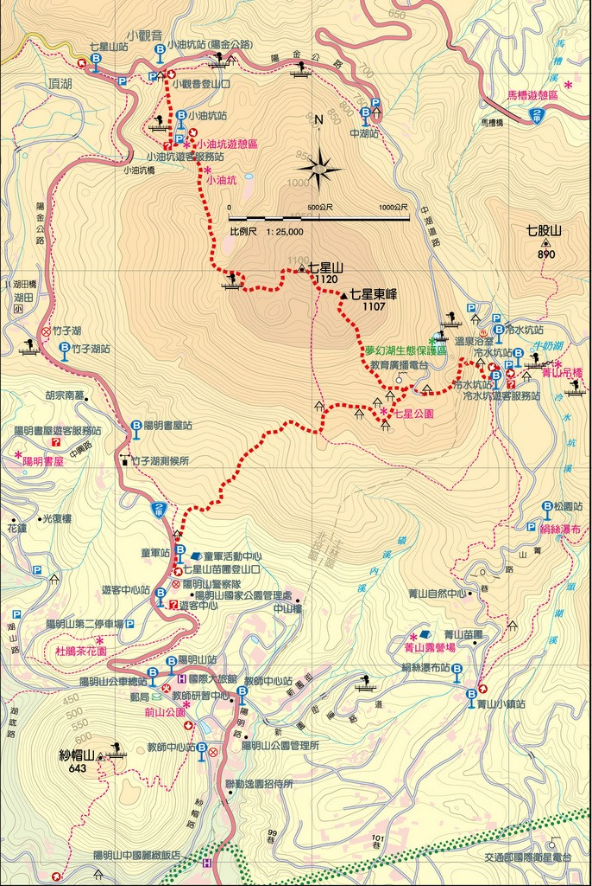

步道介紹
七星主峰‧東峰步道
小觀音登山口→小油坑遊客服務站→七星主峰→七星東峰→七星公園→七星山苗圃登山口
全長約5.7公里，平均坡度11度，走完全程約需3小時15分鐘。由七星公園下方200公尺處休憩涼亭直上七星山鞍部步道坡度較陡，約為19度，攀爬較具挑戰性。

交通資訊
大眾運輸：
遊客中心(陽明山第二停車場)站：108(遊園公車)、小8(石牌至竹子湖)、小9(復興站至竹子湖)、皇家客運(台北至金山)
童軍站：小8(石牌至竹子湖)
七星山站：108(遊園公車)、皇家客運(台北至金山)
小油坑站：108(遊園公車)
小油坑站(陽金公路)：皇家客運(台北至金山)
陽明山公車總站：紅5(捷運劍潭站至陽明山)、108(遊園公車)、260(東園至陽明山)、260區(台北車站至陽明山)
陽明山站：紅5(捷運劍潭站至陽明山)、230(捷運北投站至陽明山)、260(東園至陽明山)、260區(台北車站至陽明山)、小8(石牌至竹子湖)、小9(復興站至竹子湖)、皇家客運 (台北至金山)
＊108遊園公車於陽明山公車總站轉乘
自行開車：
本步道起點陽金公路小觀音登山口至遊客中心苗圃登山口，反向攀登亦可。
士林→仰德大道→陽金公路→陽明山第二停車場
淡水、三芝→101縣道→101甲縣道(百拉卡公路)→陽金公路→小觀音停車場或小油坑停車場
金山→陽金公路→小觀音停車場或小油坑停車場
北投→新北投→泉源路→鼎筆橋→紗帽路→陽金公路→陽明山第二停車場
停車場：
陽明山第二停車場(遊客中心對面/收費)
小觀音停車場(皇家客運小油坑站站牌旁)
小油坑停車場(小油坑遊客服務站前/收費)
小油坑橋停車場(皇家客運七星山站附近）
冷水坑1號停車場(冷水坑遊客服務站前/招標階段，暫停收費)
冷水坑2號停車場(冷水坑浴室對面)
夢幻湖停車場(夢幻湖東北坡下方)
紗帽山步道
紗帽路北登山口→觀景平台→紗帽山→紗帽路南登山口
全長約3.2公里，平均坡度15度，走完全程約需1小時30分鐘。
交通資訊
大眾運輸：
陽明山公車總站：紅5(捷運劍潭站至陽明山)、108(遊園公車)、260(東園至陽明山)、260區(台北車站至陽明山)
陽明山站：紅5(捷運劍潭站至陽明山)、230(捷運北投站至陽明山)、260(東園至陽明山)、260區(台北車站至陽明山)、小8(石牌至竹子湖)、小9(復興站至竹子湖)、皇家客運 (台北至金山)
教師中心站(紗帽路)：230(捷運北投站至陽明山)
頂半嶺站：230(捷運北投站至陽明山)
自行開車：
士林→仰德大道→格致路→陽明路→陽明山公車總站→紗帽路→北登山口或南登山口
淡水、三芝→101縣道→101甲縣道(百拉卡公路)→陽金公路→陽明山公車總站→紗帽路→北登山口或南登山口
金山→陽金公路→陽明山公車總站→紗帽路→北登山口或南登山口
北投→新北投→泉源路→鼎筆橋→紗帽路→南登山口或北登山口
停車場：
鄰近無停車場，前山公園旁紗帽路可供路邊停車，唯車位有限，籲請民眾儘量搭乘大眾運輸工具。
絹絲瀑布步道
菁山路登山口→絹絲瀑布→觀景平台→擎天崗遊客服務站
全長約2.2公里，平均坡度5度，走完全程約需1小時30分鐘。
交通資訊
絹絲瀑布步道口鄰近公車站
絹絲瀑布站：303、小15、小15區
菁山遊憩區一站：108(遊園公車)、303、小15區
擎天崗鄰近公車站
擎天崗站：108(遊園公車)、小15
詳細公車路線資訊可至臺北市公車資訊系統查詢：http://www.5284.com.tw/
自行開車：
本步道起點於菁山路101巷和新園街連絡道交叉路口至擎天崗，開車遊客可利用步道起訖點附近停車場停放，再搭乘108遊園公車或小15公車往返或回原地取車。
士林→仰德大道→山仔后→菁山路→菁山路101巷→冷水坑→擎天崗
淡水、三芝→101縣道→101甲縣道(百拉卡公路)→陽金公路→中湖→中湖戰備道路→冷水坑→擎天崗
金山→陽金公路→馬槽橋→中湖→中湖戰備道路→冷水坑→擎天崗北投→新北投→泉源路→鼎筆橋、紗帽路→陽金公路→中山樓→新園街連絡道→菁山路101巷→冷水坑→擎天崗
停車場：
冷水坑2號停車場(冷水坑公共溫泉浴室對面)
冷水坑1號停車場 (冷水坑遊客服務站前/招標階段，暫停收費)
擎天崗停車場(擎天崗遊客服務站前/招標階段，暫停收費)
金包里大路(魚路古道)
擎天崗城門→許顏橋→叉路口往上磺溪停車場（叉路口往八煙方向至八煙登山口路段，長約2.8公里，因部分路段路基掏空崩塌，步道封閉遊客請勿通行）→上磺溪停車場
長約2.5公里，步行時間約2小時。
八煙登山口往北（八煙登山口往南封閉，說明同上）→天籟社區入口（一重橋）登山口
長約2.4公里，步行時間約1小時40分鐘。
交通資訊
大眾運輸：
擎天崗站：108(遊園公車)、小15
八煙登山口鄰近公車站
八煙站：1717
天籟登山口鄰近公車站
金山農場站(天籟溫泉會館)：1717
擎天崗站：108、小15
上磺溪停車場登山口鄰近公車站
上磺溪橋站：1717
詳細公車路線資訊可至臺北市公車資訊系統查詢：http://www.5284.com.tw/
自行開車：
本步道起點為擎天崗與上磺溪停車場，開車之遊客可利用步道起訖最近的停車場，再搭乘皇家客運及108遊園公車回原點取車。
士林→仰德大道→山仔后→菁山路101巷→冷水坑→擎天崗
淡水、三芝→101縣道→右轉101甲縣道(百拉卡公路)→陽金公路→中湖→中湖戰備道路→冷水坑→擎天崗
金山→陽金公路→天籟溫泉會館站→八煙→中湖→中湖戰備道路→冷水坑→擎天崗
北投→新北投→泉源路→鼎筆橋、紗帽路→陽金公路→中山樓→新園街連絡道→→菁山路101巷→冷水坑→擎天崗
停車場：
冷水坑1號停車場 (冷水坑遊客服務站前/收費)
冷水坑2號停車場(冷水坑公共浴室前)
擎天崗停車場 (擎天崗遊客服務站前/收費)
上磺溪停車場(魚路古道上磺溪停車場出口)
擎天崗環形步道
擎天崗嶺頭喦→陽明山牧場教育解說中心→擎天崗城門→擎天崗嶺頭喦
全長約2.4公里，平均坡度4-6度，走完全程約需50分鐘。
本步道屬擎天崗草原特別景觀區的遊憩步道，適合閤家共遊。
交通資訊
大眾運輸：
擎天崗站：108、小15
詳細公車路線資訊可至臺北市公車資訊系統查詢：http://www.5284.com.tw/
自行開車：
士林→仰德大道→山仔后→菁山路101巷→冷水坑→擎天崗
淡水、三芝→101縣道→101甲縣道(百拉卡公路)→陽金公路→馬槽→中湖→中湖戰備道路→冷水坑→擎天崗
金山→陽金公路→馬槽→中湖→中湖戰備道路→冷水坑→擎天崗
北投→新北投→泉源路→鼎筆橋→紗帽路→陽金公路→馬槽→中湖→中湖道路→冷水坑→擎天崗
停車場：
擎天崗停車場(擎天崗遊客服務站前/收費)
冷水坑2號停車場(冷水坑溫泉浴室前)
冷水坑1號停車場 (冷水坑遊客服務站前/收費)